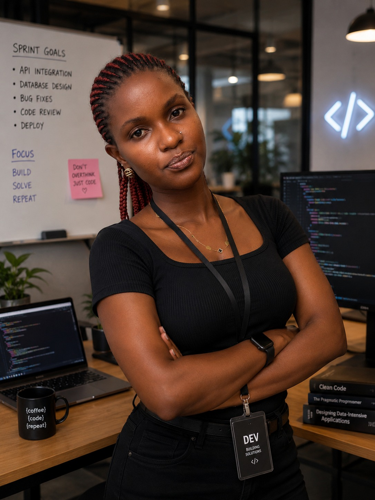
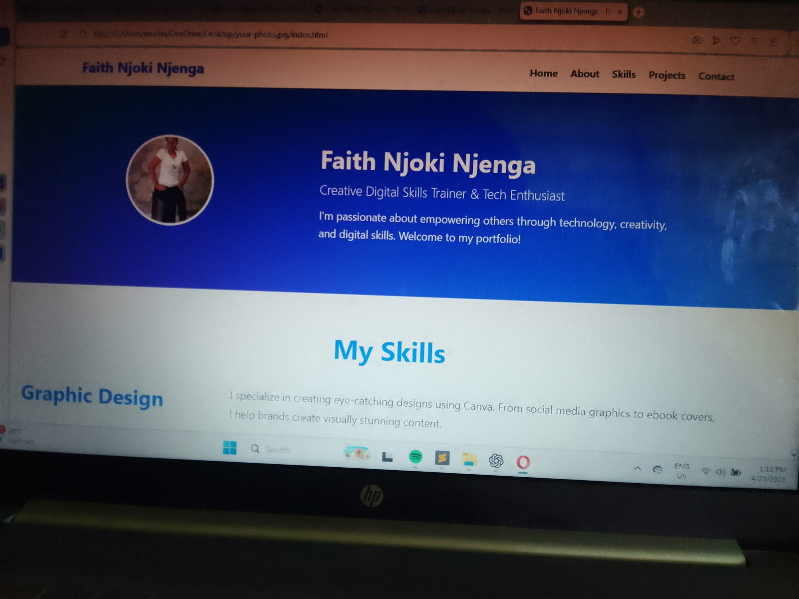

Digital Skills Training
Beginner-friendly instruction in computer literacy, productivity tools, online communication, digital safety, and creative software.

Technology Educator - Creative Technologist
Digital skills trainer and creative technologist helping learners, schools, and growing brands use technology with confidence, creativity, and practical purpose.
Faith Njoki Njenga is a technology educator and creative technologist specializing in digital literacy training, robotics education, modern web technologies, and creative digital design.
Her work sits at the intersection of education, innovation, and creativity. She helps learners understand technology, apply it confidently, and use it to build useful projects, digital products, and stronger professional opportunities.
Beginner-friendly instruction in computer literacy, productivity tools, online communication, digital safety, and creative software.
Project-based robotics learning that introduces learners to automation, logic, engineering thinking, and problem solving.
Clean, responsive websites built with HTML, CSS, and JavaScript to support portfolios, learning projects, and small business visibility.
Visual communication for learning materials, social content, flyers, posters, ebook covers, and digital campaign assets.
Structured lessons that help learners build practical confidence with computers, online tools, design platforms, and everyday digital workflows.
Introductory robotics sessions and learning support for students exploring technology, automation, and hands-on innovation.
Portfolio and business websites designed to communicate expertise clearly and perform well across mobile and desktop screens.
Support for using digital tools in education, training programs, learning content, and creative classroom experiences.
Polished graphics for educational resources, events, social media, digital products, and brand communication.
Educational ebooks, presentations, guides, and visual resources shaped for clear understanding and learner engagement.
Design Philosophy
The portfolio is designed to communicate leadership, innovation, creativity, and a strong commitment to digital empowerment through a modern user experience.
Education - Creative Design
Educational digital content designed for young learners, combining accessible writing, visual storytelling, and classroom-friendly presentation.
Robotics - Education
Hands-on learning experiences that introduce students to robotics concepts, logic, automation, and problem-solving habits.

Web Development
A responsive website built to present skills, services, projects, and professional contact pathways in one clear digital platform.
Digital Literacy
Training resources that support learners as they build confidence with computers, online tools, creative platforms, and web basics.
Creative Design
Visual communication assets for learning programs, events, promotional content, and digital product presentation.
Robotics Session Videos
These session clips can be hosted externally so the website stays fast while still giving visitors access to real classroom and robotics learning moments.
A short session highlight showing learners being introduced to robotics concepts, components, and the purpose of hands-on technology education.
Google Drive link pendingA practical classroom moment where learners explore building, testing, troubleshooting, and connecting robotics ideas to real problem solving.
Google Drive link pendingA guided demonstration that captures Faith supporting learners, explaining key steps, and encouraging curiosity through technology-based learning.
Google Drive link pendingTraining learners to understand and apply digital tools in practical, confidence-building ways.
Introducing robotics concepts as a pathway into problem solving, creativity, and STEM exploration.
Helping learning environments use digital tools, creative media, and web technologies more effectively.
Future Expansion
The portfolio is structured to grow with future work, including robotics showcases, learning articles, interactive teaching resources, and AI-supported educational tools.
Reach out for digital skills training, robotics education, web development, technology integration, or creative design support.